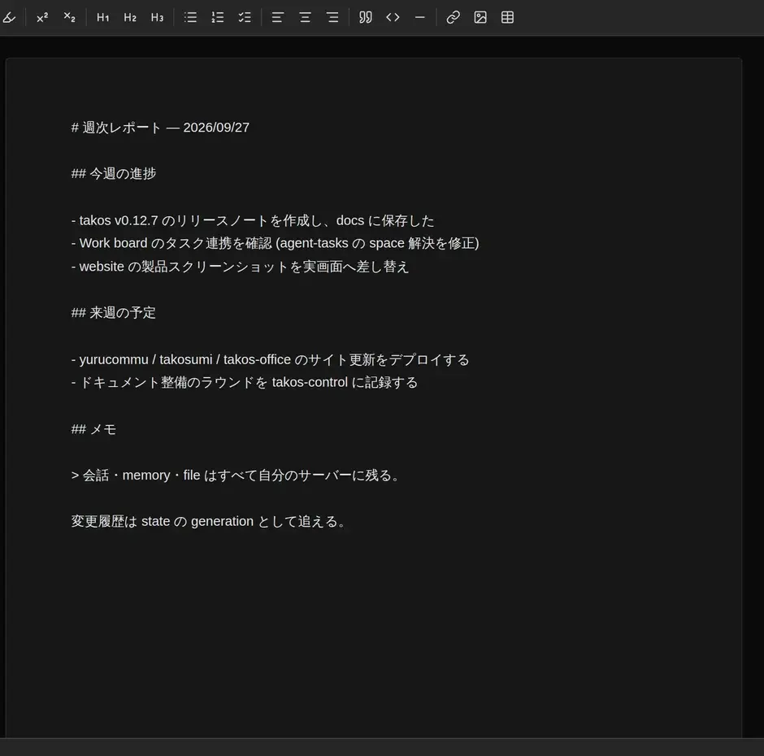

Takos Office
Docs・Slide・Sheet を、自分の Workspace の中で動かす office suite。各アプリは MCP を話し、AI エージェントが文書・スライド・シートを直接読み書きできる。
GPL-3.0-only · github.com/tako0614/takos-office · takos-office Capsule · MCP (/mcp endpoint)

Apps
文書・プレゼン・表計算を、ひとつの takos-office Capsule
に。
Docs
Tiptap ベースのリッチテキストエディタ。ノートも長文も、自分の space の中で書く。

Slide
Canvas ベースのプレゼンテーションエディタ。Keynote / Google Slides で行う編集を、自分の space の中で。

Sheet
スプレッドシート / 表計算。HyperFormula で 400 以上の Excel 互換関数。バーチャルスクロールで大きな表も扱える。

Agent
各アプリは MCP サーバーを公開している。MCP 対応エージェントが、文書・スライド・シートを直接読み書きできる。
「先週のメモから提案書のスライドを作って」と頼めば、エージェントが slide を開いて組み立てる。コピペも、アプリの切り替えもいらない。
docs_* · slide_* · sheet_* — ひとつの /mcp endpoint
Roadmap
核となる3つのエディタをひとつの Capsule にまとめ、Workspace の中で完結する道具を増やしていく。将来の道具はそれぞれ独立した Capsule として、好きなものだけ入れられる。
Available
- Docs — 文書 / ノート (
/docs) - Slide — プレゼンテーション (
/slide) - Sheet — スプレッドシート / 表計算 (
/sheet)
Planned
- Calendar — スケジュール / イベント管理
- Mail — 自分のメールボックスの上で動くクライアント
- Form — フォーム / アンケート、結果はシートへ
- Base — 軽量データベース / 構造化テーブル
データと運用
- ドキュメントも編集履歴も、自分の Workspace の space 内に保存される
-
takos-officeCapsule を明示的に追加する。uninstall もいつでもできる - 席数ライセンス・月額なし — 自分のインフラ費のみ
- GPL-3.0-only
導入
Takos Workspace の Apps から takos-office Capsule
を明示的に追加する。Docs・Slide・Sheet がひとつの Capsule で入る。